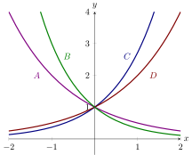
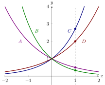
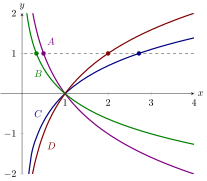

Exponential and logarithmic functions illuminated.
Exponential and logarithmic functions may seem somewhat esoteric at first, but they
model many phenomena in the real-world.
What are exponential and logarithmic functions?
An
exponential function is a function of the form where is a positive real
number. The domain of an exponential function is .
Is an exponential function?
Note that
A
logarithmic function is a function defined as follows where is a positive real
number. The domain of a logarithmic function is .
In either definition above is called the base.
Connections between exponential functions and logarithms
Let be a positive real number with .
- for all positive
- for all real
What exponent makes the following expression true?
What can the graphs look like?
Graphs of exponential functions
Here we see the the graphs of four exponential functions.

Match the curves , , , and with the functions
One way to solve these problems is to
compare these functions along the vertical line ,

Note Hence we see:
- corresponds to .
- corresponds to .
- corresponds to .
- corresponds to .
Graphs of logarithmic functions
Here we see the the graphs of four logarithmic functions.
Match the curves , , , and with the functions
First remember what means: So now
examine each of these functions along the horizontal line

Note again (this is from the definition of a logarithm) Hence we see:
- corresponds to .
- corresponds to .
- corresponds to .
- corresponds to .
Properties of exponential functions and logarithms
Working with exponential and logarithmic functions is often simplified by applying
properties of these functions. These properties will make appearances throughout our
work.
Properties of exponents
Let be a positive real number with .
What exponent makes the following true?
Properties of logarithms
Let be a positive real number with .
What value makes the following expression true?
What makes the following expression true?